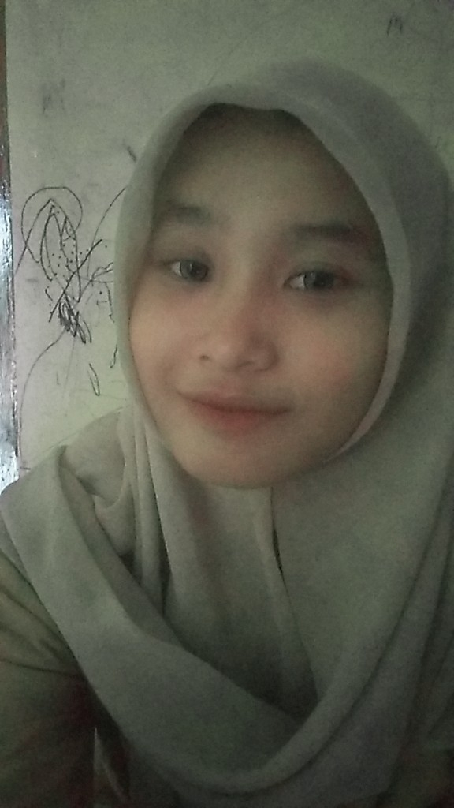

Curriculum Vitae Fajrina Nurhaliza

Data Pribadi
Nama : Fajrina Nurhaliza
Tempat, Tanggal Lahir : Tegal, 16 Desember 2004
Alamat : Jalan Werkudoro, Slerok, Kota Tegal
Agama : Islam
>No.Telepon : +62 812-5260-3460
Riwayat Pendidikan
- SMP Negeri 14 Kota Tegal
- SMA Negeri 3 Kota Tegal
Pengalaman Organisasi
- Organisasi Patroli Keamanan Sekolah
- Organisasi Himpunan Mahasiswa Prodi Teknik Informatika
- Kepanitiaan PKKMB 2024
Hobi
- Menyanyi
- Menggambar
- Touring
Media Sosial